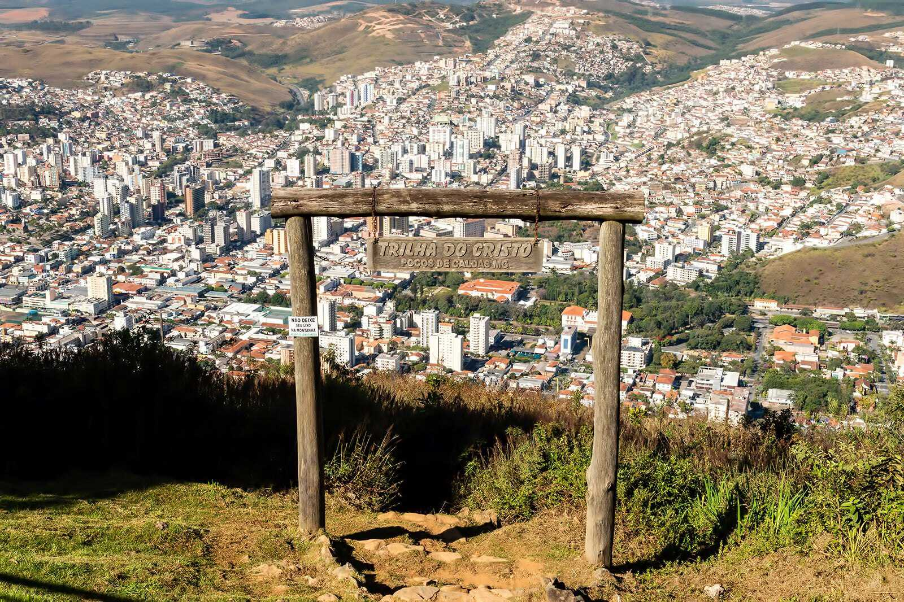

In the city of Manaus, the state capital and a mandatory stop to understand a little of the local culture and history, you can find a series of itineraries to discover the forest and the region's enormous biodiversity. Among the most popular experiences are observing, or spotting, alligators at night and also other local species, in addition to the famous meeting of the waters of the Negro River and the Solimões River.
In addition to Christ the Redeemer, located in Rio de Janeiro, there is vegetation around it with trails and a breathtaking landscape. Tijuca National Park, one of the largest urban forests in the world. This Atlantic Forest reserve is made up of waterfalls and trails that end with the landscape of Guanabara Bay seen from above. Come with our club, for the biggest and best natural experiences.
In Balneário Camboriú, located in Santa Catarina, in addition to wonderful beaches and vegetation, many nature activities, with an itinerary that our club manages for you.
With more than 80% of preserved green area, Ubatuba hides secret beaches that are only accessible by trail or by sea. One tip is to create an itinerary with our club, and do some hiking, snuffing, trails that require good physical conditioning. The good news is that some routes pass through more than 1 beach, which helps you catch your breath and refresh yourself along the way..
In a unique position, where Brazil, Argentina and Paraguay meet, the city of Foz do Iguaçu, in Paraná, is one of the most spectacular destinations in Brazil. It’s impossible not to be left open-mouthed by the natural wonders there. With Atlantic Forest preservation areas and countless butterflies, the park offers several cool tours, from trails and animal watching to boating and kayaking, as well as rafting and climbing. On tours, be prepared to walk. And be sure to bring a hat, comfortable shoes and clothes and, of course, sunscreen.

Explore the Pantanal, the world's largest tropical wetland, and a haven for wildlife enthusiasts.
In Serra Gaúcha, Canela is one of the best destinations for those looking for contact with nature and tranquility, but also a lot of adrenaline. Known as the Region of Hortênsias, the city attracts tourists from all over Brazil and the world. For those who visit the place, it is impossible not to have fun on the cable cars at Parque da Serra, which has attractions such as Central Station, Animal Station and Cascata Station, from where it is possible to admire the Caracol Cascade, 130 meters high. Other tours and activities to enjoy outdoors include hiking in Parque da Ferradura and Parque dos Paredões, mountain bike trails in Parque das Sequoias, as well as rafting, tubing and tree climbing in Parque das Corredeiras.
In the cities of Caldas Novas and Rio Quente, in Goiás, you can find all this and much more. Attractions such as Parque das Fontes, with natural pools, Hot Park, with a pool with waves or Di Roma Acqua Park, with more radical options, attract groups of friends and families to the place every year. Other activities in the region include hiking and waterfall bathing.

One of the best national destinations to enjoy as a family or as a couple, Poços de Caldas has great surprises in store for those who love contact with nature and can’t do without a good adventure. The attractions of this charming mining town and famous hydromineral resort include Cachoeira Véu de Noiva, one of the city's postcards, Pedra do Balão and Thermas Antônio Carlos, with several spa courses and architecture in the best 30s style. adventure tourism and ecotourism are also highlights in Poços de Caldas, with the Legal Tourism program.